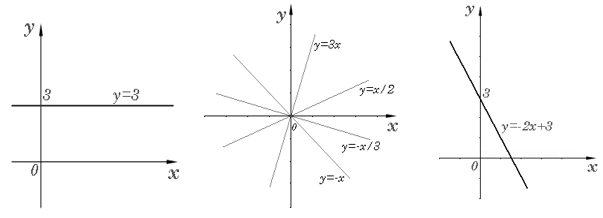

Тема заняття. Властивості та графіки елементарних функцій. Перетворення графіків функцій.
1. Поняття функції
Поняття функції є одним із основних математичних понять. Це поняття відбиває тісний зв'язок математики з різноманітними явищами та процесами, які зустрічаються у природі, техніці, економіці.
Поняття функції пов’язане зі встановленням залежності (зв’язку) між елементами двох числових множин.
Залежність між змінними х і у називається функцією, якщо кожному допустимому значенню х відповідає деяке значення у.
Змінну х називають незалежною змінною, або аргументом, змінну у – залежною змінною. Всі значення, яких набуває незалежна змінна х, утворюють область визначення функції.
Число у, яке відповідає аргументу х, називається значенням функції в точці х. Усі значення, яких набуває функція, утворюють множину значень функції.
Для позначення функціональної залежності часто використовують символ \(y=f\left(x\right)\).
Термін «функція» вперше з’явився у XVII ст.. у працях німецького математика і філософа Г.В. Лейбніца. У формуванні сучасного розуміння функціональної залежності брало участь багато видатних математиків, зокрема, російський математик М.І. Лобачевский.
Задати функцію – це значить сформулювати правило, за допомогою якого для кожного значення аргументу х можна знайти відповідне йому значення у. Існують різні способи задання функції.
У математиці функціональна залежність найчастіше задається формулами. Такий спосіб задання функції називається аналітичним. Аналітичний спосіб дає можливість обчислити значення функції при будь-якому значенні аргументу з області визначення, точно або з довільною точністю. Він є зручним для теоретичних міркувань, оскільки формула містить, хоч і у прихованому вигляді, всі відомості про функцію. Це позитивний бік аналітичного способу задання. Незручність способу полягає в тому, що у випадку досить складних формул важко виявити усі властивості, уявити поведінку функції.
Функція вважається заданою графічно, якщо задано графік. Переваги способу полягають у тому, що графік дає просте і наочне уявлення про поведінку функції та її характерні властивості.
Недоліки способу полягають у тому, що точність обчислення значень функції за допомогою графіка досить низька внаслідок похибок при проведені перпендикуляра і вимірюванні довжини, а також внаслідок того, що проведена нами лінія має певну ширину. Слід зазначити , що не всяка лінія на площині є графіком функції. Графіком функції є тільки та лінія, яку кожна пряма, паралельна осі Оу, перетинає не більше ніж в одній точці.
Функцію можна задати за допомогою таблиці. Цей спосіб полягає у безпосередньому виписуванні значень функції, проте лише для скінченого набору значень аргументу. Табличний спосіб задання функції застосовується у тому випадку, коли невідомий закон залежності між величинами, але він невідомий. Для практичного користування цими функціями складають таблиці їхніх значень (наприклад, таблиці квадратів, квадратних коренів, тригонометричних функцій). При табличному способі неважко побудувати графік функції, особливо за допомогою точок.
Недоліком табличного задання неперервних залежностей є те, що значення функції подаються лише в окремих точках. Це спричинює виникнення задач інтерполяції та екстраполяції табличної залежності, тобто поширення її на весь проміжок зміни аргументу, що відповідає таблиці, та поза його межами. Іншим недоліком табличного способу є його незручність для сприйняття та при розгляді теоретичних питань.
Усі способи задання функції ніби доповнюють один одного, але іноді виникає потреба перейти від одного способу задання до іншого. Так, за даним графіком чи таблицею буває доцільно підібрати відповідну їм формулу, за формулою скласти таблицю, побудувати графік. З подібними задачами постійно доводиться зустрічатися під час вивчення функцій.
2. Наведемо відомі функції та їхні графіки
- Лінійна функція - це функція , що має вигляд \(y=kx+b\), де k,b – деякі сталі. Графіком цієї функції є пряма. Число k, яке дорівнює тангенсу кута нахилу прямої до додатного напряму осі х, називається кутовим коефіцієнтом. Якщо , то маємо сталу функцію \(y=b\), якщо b=0, то маємо пряму пропорційність \(y=kx\).

- Степенева функція – це функція виду \(y=x^p\), де р – довільне дійсне число.

- Показникова функція \(y=a^x\) , де а- фіксоване число \(a>0,a\neq1\)

- Логарифмічна функція\(y={log}_a{x},a>0,a\neq1\)

- Тригонометричні функції \(y=sin{x}\), \(y=cos{x}\), \(y=tgx\), \(y=ctgx\)

- Обернені тригонометричні функції \(y=arcsin{x}\), \(y=arccos{x}\), \(y=arctg{x}\), \(y=arcctg{x}\)

3. Монотонність. Парність. Періодичність. Обмеженість
Функція називається зростаючою у деякому інтервалі, якщо для довільних значень \(x_1,x_2\) аргументу з цього інтервалу значення функції задовольняють умові \(f\left(x_1\right)>f\left(x_2\right)\) при \(x_1>x_2\).
Функція називається спадаючою у деякому інтервалі, якщо \(f\left(x_1\right)<f\left(x_2\right)\) при \(x_1>x_2\).
Зростаючі, неспадні, спадні та незростаючі функції називаються монотонними.
Функція називається парною, якщо для будь-якого х з області визначення функції виконується рівність \(f\left(-x\right)=f\left(x\right)\). Графік парної функції симетричний відносно осі ординат.
Функція називається непарною, якщо для будь-якого х з області визначення функції виконується рівність \(f\left(-x\right)=-f\left(x\right)\). Графік непарної функції симетричний відносно початку координат.
Періодичною називається функція, яка для всіх х з області визначення функції виконується рівність \(f\left(x+T\right)=f\left(x\right)\). Найменше значення \(T>0\), яке задовольняє цій умові, називається періодом функції.
Функція \(y=f\left(x\right)\) називається обмеженою, якщо існує така стала величина А, що \(\left|f\left(x\right)\right|\le\) A для довільного значення аргументу х. В іншому випадку функція називається необмеженою.
4. Перетворення графіків функцій
Знаючи графік функції \(y=f\left(x\right)\), можна побудувати графіки функцій \(y=af\left(bx+c\right)+d\), а також графіки функцій \(y=f\left(\left|x\right|\right),\mathrm{\ \ }y=\left|f\left(x\right)\right|\) і т.д.


Питання для самоконтролю
- Що таке функція?
- Що називається областю визначення функції?
- Перечисліть способи задання функції та охарактеризуйте їх.
- Назвіть основні елементарні функції.
- Яка функція називається зростаючою? Спадаючою?
- Яка функція називається парною? Непарною?
- Чи існують функції, які одночасно і парні, і непарні?
- Чи може зростаюча функція бути парною (непарною)?
Тестові завдання для самоконтролю: